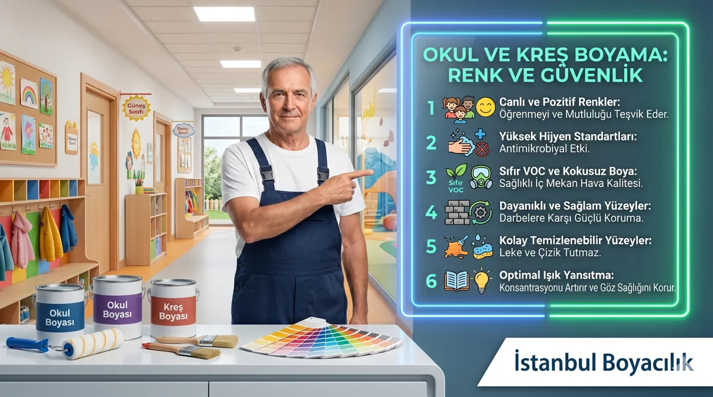

Okul ve kreş boyamasında ürün belgeleri, tozlu hazırlık, çalışma alanının ayrılması ve yeniden kullanım zamanı birlikte planlanır. Renk önerileri estetik tercihlerdir; öğrenme veya gelişim sonucu garanti etmez.
Güvenli Boya Seçiminin Kriterleri
| Kriter | Gereksinim |
|---|---|
| VOC içeriği | Tam ürünün TDS/SDS, VOC ve varsa iç hava emisyon beyanı |
| TSE belgesi | Varsa belgenin geçerliliği, tam ürün ve standart kapsamı; tek başına tüm oda güvenliği değildir |
| Silinebilirlik | Kalem, boya vs. izlerin kolayca temizlenebilmesi |
| Dayanıklılık | Yüksek trafik — darbe ve sürtünme dayanımı |
| Koku | Koku tek başına emisyon veya yeniden kullanım güvenliği ölçütü değildir |
Alan Bazlı Renk Önerileri
Sınıflar
Açık sarı ve yumuşak yeşil, sınıfın ışığı ve mobilyalarıyla denenebilecek seçeneklerdir. Öğretmen ve kullanıcı görüşlerini alın; geniş yüzeylerdeki doygunluğu numuneyle değerlendirin. Bir vurgu duvarı görsel alan tanımlayabilir; yaratıcılık veya konsantrasyon artışı garanti edilmez.
Kreş ve Anaokulu Alanları
Yumuşak turuncu, açık mavi ve sarı estetik seçeneklerdir; gelişimi destekleyen yaşa özgü reçete olarak sunulmaz. Sık temas edilen yüzeylerin temizlenebilirliğini kullanılan temizlik yöntemi ve ürün föyüyle değerlendirin.
Koridorlar ve Ortak Alanlar
Açık ve aydınlık renkler koridorları geniş gösterir. Dayanıklı ve silinebilir yüzey boyaları yoğun kullanım için uygundur.
Spor Salonu ve Oyun Alanları
Kırmızı veya turuncu vurgu, tesisin renk planına göre bu alanlarda denenebilir. Darbe dayanımlı ve silinebilir boya tercih edilmelidir.
Sık Sorulan Sorular
Ürünün bileşim ve uygunluk bilgilerini üreticiden, TDS/SDS ve varsa test raporundan kontrol edin; bu rehber Türkiye için sayısal kurşun sınırı veya belge zorunluluğu ileri sürmez. İçeriği bilinmeyen eski kaplamaları kontrolsüz kazımayın; hazırlık yöntemini uzman ve idareyle belirleyin.
Her sınıfta öğrenmeyi artırdığı garanti edilen bir renk yoktur. Açık sarı, yumuşak yeşil ve mavi gibi seçenekleri mevcut ışık, mobilya ve kullanıcı görüşleriyle değerlendirin.
Öğrencilerin bulunmadığı zaman seçilmeli, ürünün kuruma ve havalandırma talimatları için yeterli süre ayrılmalıdır. Yeniden kullanım temizlik ve kullanım koşulları tamamlanınca idareyle kararlaştırılır; hafta sonu planı sıfır maruziyet garantisi değildir.
Bölgenize Göre Hizmet Alın
Ofis, mağaza, klinik, okul veya ticari alan boyama işleri için çalışma saatlerinize uygun planlama ve keşif talep edebilirsiniz.
Keşif Talep Edin